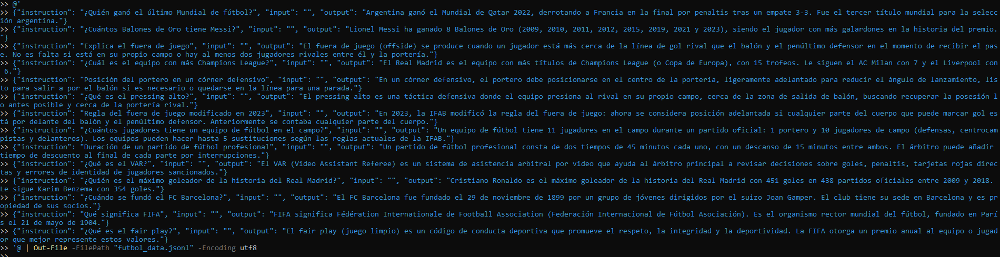
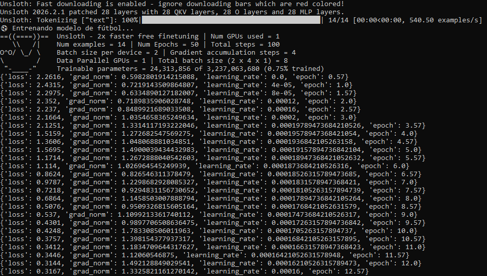
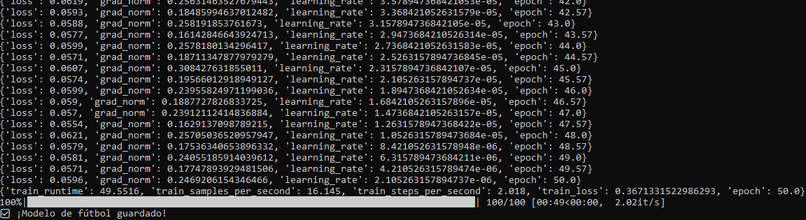
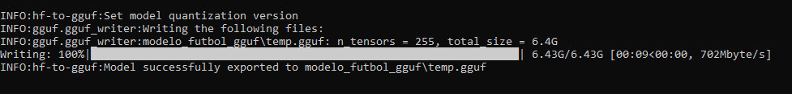
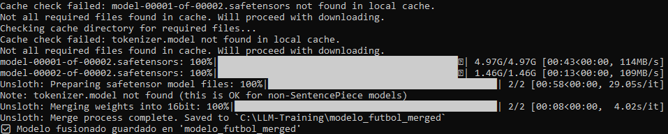
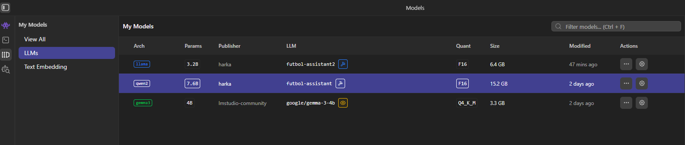
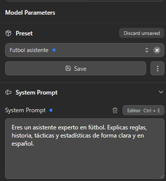
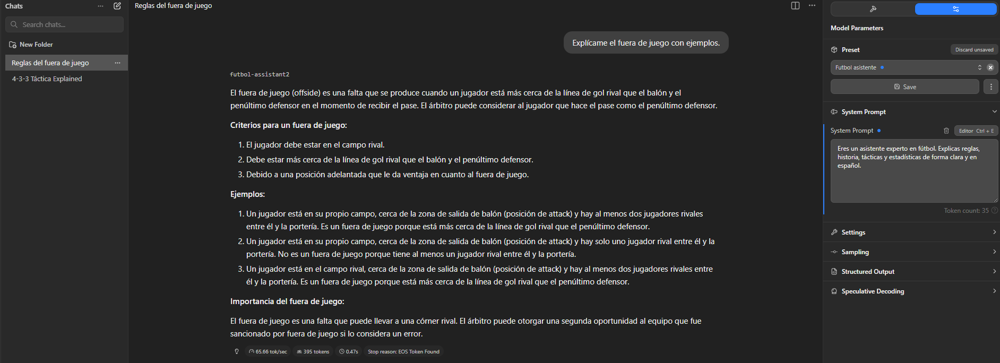
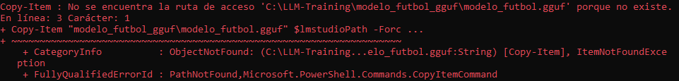

Documento de la práctica donde se construye un modelo de lenguaje especializado en fútbol a partir de
Llama 3.2‑3B, se entrena con datos propios y se despliega el resultado en LM Studio usando formato
.gguf.[web:57]
El objetivo de esta práctica es diseñar y entrenar un LLM centrado en temática futbolística, capaz de responder preguntas sobre táctica, historia, reglamento y competiciones con un estilo claro y cercano.
Para conseguirlo se parte de un modelo de lenguaje general (Llama 3.2‑3B Instruct) y se construye un modelo especializado, entrenado y empaquetado para ejecutarse en local en un PC con Windows y GPU dedicada.
unsloth/Llama-3.2-3B-Instruct.unsloth sobre PyTorch y CUDA..gguf compatible con LM Studio.[web:57]
Todo el proyecto se ha desarrollado en la carpeta C:\\LLM-Training, utilizando un entorno
virtual de Python para aislar las dependencias del resto del sistema y poder experimentar sin riesgo.
cd C:\
mkdir LLM-Training
cd LLM-Training
py -3.11 -m venv venv
.\venv\Scripts\Activate.ps1
pip install --upgrade pip
pip install torch torchvision --index-url https://download.pytorch.org/whl/cu121
pip install unsloth transformers datasets trl peft accelerate ggufbfloat16 sin errores.
Para la conversión del modelo al formato final se descargó el repositorio llama.cpp en
C:\\LLM-Training\\llama.cpp, utilizando únicamente el script
convert_hf_to_gguf.py y los binarios ya compilados.
LM Studio se instaló como interfaz gráfica para cargar y ejecutar el LLM de fútbol de forma local,
ya que soporta modelos en formato .gguf organizados en una carpeta de modelos propia.[web:57]
El conocimiento específico de fútbol se introduce a través de un fichero futbol_data.jsonl,
donde cada línea contiene una instrucción y la respuesta esperada relacionada con conceptos clave del deporte.
{"instruction": "Explica qué es el fuera de juego y pon un ejemplo sencillo.",
"input": "",
"output": "El fuera de juego es una regla que impide que un atacante reciba el balón..."}
{"instruction": "Describe el sistema táctico 4-3-3 y sus principales variantes.",
"input": "",
"output": "El 4-3-3 se compone de cuatro defensas, tres centrocampistas y tres delanteros..."}
{"instruction": "Haz un resumen de la historia de los Mundiales de fútbol.",
"input": "",
"output": "El primer Mundial se disputó en 1930 en Uruguay y desde entonces..."}Estos ejemplos sirven de base para que el modelo aprenda a estructurar explicaciones largas, comparaciones y descripciones tácticas de manera coherente.

En el script de entrenamiento se utiliza la librería datasets para leer el archivo JSONL
y transformarlo en un único campo de texto con el formato de conversación que espera Llama 3.2.
from datasets import load_dataset
dataset = load_dataset("json", data_files="futbol_data.jsonl", split="train")
def format_example(example):
return {
"text": f"<|begin_of_text|> user\n{example['instruction']}\n assistant\n{example['output']}"
}
dataset = dataset.map(format_example)
El corazón del proyecto es el script train_futbol.py, que carga el modelo base,
aplica la configuración de entrenamiento y construye el nuevo LLM especializado en fútbol.
from unsloth import FastLanguageModel
from trl import SFTTrainer
from transformers import TrainingArguments
import torch
max_seq_length = 2048
dtype = None
load_in_4bit = True
model, tokenizer = FastLanguageModel.from_pretrained(
model_name="unsloth/Llama-3.2-3B-Instruct",
max_seq_length=max_seq_length,
dtype=dtype,
load_in_4bit=load_in_4bit,
)
model = FastLanguageModel.get_peft_model(
model,
r=16,
target_modules=["q_proj","k_proj","v_proj","o_proj",
"gate_proj","up_proj","down_proj"],
lora_alpha=16,
lora_dropout=0,
bias="none",
use_gradient_checkpointing="unsloth",
)Con esta configuración el modelo puede entrenarse en una GPU de 12 GB, manteniendo un tamaño de contexto de 2048 tokens y concentrando el aprendizaje en las partes más importantes de la red.
Para ajustar el comportamiento del modelo se utiliza SFTTrainer, que realiza un entrenamiento
supervisado sobre el texto del dataset con un número moderado de pasos y un tamaño de batch reducido.
trainer = SFTTrainer(
model=model,
tokenizer=tokenizer,
train_dataset=dataset,
dataset_text_field="text",
max_seq_length=max_seq_length,
packing=False,
args=TrainingArguments(
per_device_train_batch_size=2,
gradient_accumulation_steps=4,
max_steps=100,
learning_rate=2e-4,
fp16=not torch.cuda.is_bf16_supported(),
bf16=torch.cuda.is_bf16_supported(),
logging_steps=1,
output_dir="outputs_futbol",
),
)
print("Entrenando el modelo de fútbol...")
trainer.train()
print("Guardando el modelo especializado...")
model.save_pretrained("modelo_futbol")
tokenizer.save_pretrained("modelo_futbol")

El entrenamiento genera principalmente adaptadores, por lo que antes de convertir a .gguf
se fusiona el modelo resultante en una versión de 16 bits almacenada en
modelo_futbol_merged.
import os
os.environ["TORCH_COMPILE_DISABLE"] = "1"
from unsloth import FastLanguageModel
model, tokenizer = FastLanguageModel.from_pretrained(
model_name="modelo_futbol",
max_seq_length=2048,
dtype=None,
load_in_4bit=True,
)
print("Fusionando el LLM de fútbol...")
model.save_pretrained_merged("modelo_futbol_merged", tokenizer, save_method="merged_16bit")
print("Modelo fusionado guardado en 'modelo_futbol_merged'")
Para crear el archivo .gguf se usa una versión compatible del script
convert_hf_to_gguf.py, generando primero un modelo f16 en
modelo_futbol_gguf\\temp.gguf.
cd C:\LLM-Training
.\venv\Scripts\Activate.ps1
python convert.py modelo_futbol_merged `
--outfile modelo_futbol_gguf/temp.gguf `
--outtype f16
Los intentos de cuantizar con llama-quantize.exe no llegaron a producir un archivo
funcional, por lo que en esta práctica se ha optado por utilizar el modelo f16
directamente en LM Studio, aceptando un mayor tamaño pero garantizando su funcionamiento.

LM Studio detecta automáticamente modelos locales cuando se almacenan bajo su carpeta
.lmstudio\\models con la estructura Publisher/Modelo/archivo.gguf.[web:57][web:63]
En este caso se creó la ruta
C:\\Users\\harka\\.lmstudio\\models\\harka\\futbol-assistant2\\ y se copió ahí
el archivo generado temp.gguf, renombrándolo a futbol-assistant2-f16.gguf.
$modelsDir = "$env:USERPROFILE\.lmstudio\models"
$publisher = "harka"
$modelName = "futbol-assistant2"
$targetDir = Join-Path $modelsDir "$publisher\$modelName"
mkdir $targetDir -Force
Copy-Item "C:\LLM-Training\modelo_futbol_gguf\temp.gguf" `
"$targetDir\futbol-assistant2-f16.gguf" -Force


El primer intento fue dejar que Unsloth construyera automáticamente los binarios de
llama.cpp para exportar el LLM a GGUF, pero el proceso intentó ejecutar
comandos de compilación típicos de Linux como make, rm o
apt-get, que no existen en Windows.
La solución fue abandonar esa automatización y pasar a un flujo totalmente manual:
descargar los ejecutables de llama.cpp, copiar convert_hf_to_gguf.py
y controlar desde PowerShell todos los pasos de conversión.
gguf y el conversor
Al descargar la versión más reciente de convert_hf_to_gguf.py surgió un error
de importación de tipos de tokenizador porque la librería gguf instalada
no era la que el script esperaba.
Se resolvió utilizando una revisión anterior del conversor (guardada como convert.py)
compatible con la versión de gguf del entorno, evitando tener que volver a instalar
paquetes o modificar el código fuente.
En un primer intento se trató de convertir directamente la carpeta modelo_futbol,
pero el conversor devolvió un error al no encontrar config.json ni los pesos
completos del modelo.
Esto ayudó a entender que modelo_futbol contenía solo parte de la información
y que era imprescindible generar primero modelo_futbol_merged con todos los
archivos estándar de un modelo de Hugging Face antes de pasar a GGUF.
Aunque llama-quantize.exe parecía ejecutarse sin errores, el archivo cuantizado
nunca aparecía en la carpeta de salida, por lo que no se podía utilizar un modelo más ligero.
Para no bloquear la práctica, se decidió usar el modelo F16 resultante de la conversión, que ocupa más espacio en disco pero funciona de forma estable en LM Studio sobre la GPU disponible.

Al principio se copió el archivo .gguf a una carpeta genérica
FutbolAI directamente bajo .lmstudio\\models, pero LM Studio no
mostraba el nuevo modelo en la lista.
La documentación indica que la aplicación espera la estructura
Publisher/NombreModelo/archivo.gguf, por lo que al reorganizar la ruta como
...\\.lmstudio\\models\\harka\\futbol-assistant2\\futbol-assistant2-f16.gguf
el modelo apareció inmediatamente y pudo usarse en las conversaciones.[web:57][web:63]